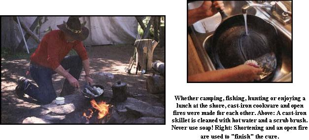

Whether camping, fishing, hunting or enjoying a lunch at the shore, cast-iron cookware and open fires were made for each other. A cast-iron siillet is cleaned with hot water and a scrub brush. Never use soap! Shortening and an open fire are used to season cast iron.